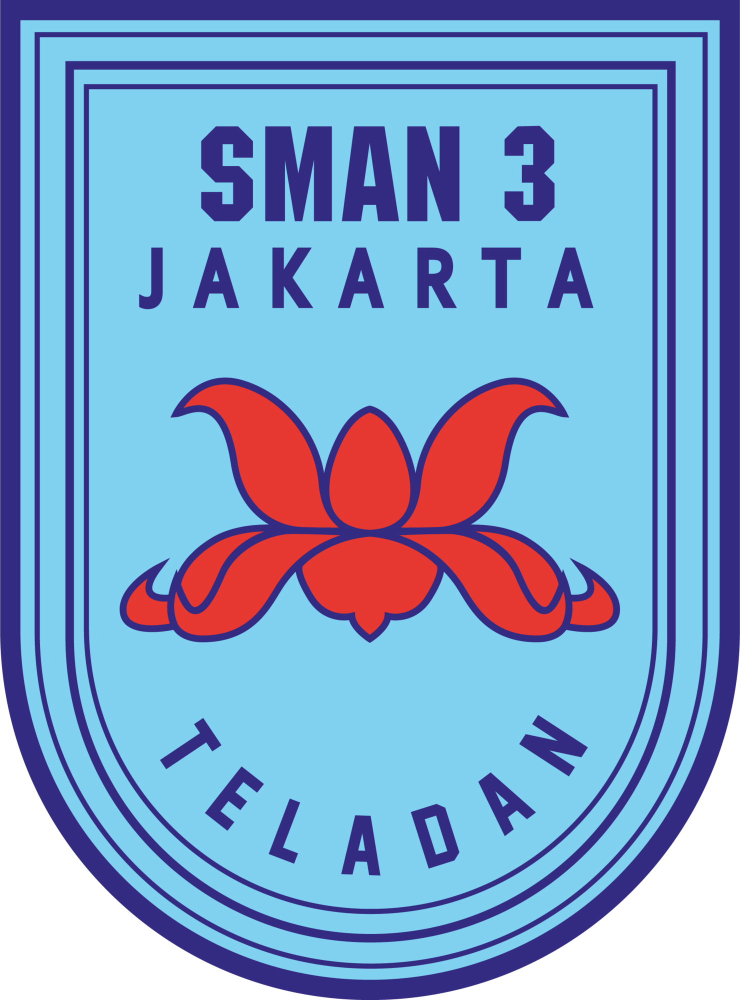

Hey there! I’m Syahrul Wahyu Romadon, but you can just call me Syahrul or Syas. I’m currently studying at Multimedia Nusantara University under the Faculty of Art and Design, majoring in Film and Animation. This isn’t just something I study, it’s something I’m truly passionate about Film and animation have always been my thing.
About Me
Hi! I’m currently a college student who is passionate about discovering and developing my creative potential. I have a strong interest in videography, photography, video editing, and sound composing.
At the moment, I am actively seeking hands-on experience by joining various activities such as volunteering at events, participating in short film productions, attending videography workshops, and engaging in creative collaborations like student media projects, freelance opportunities, and community-based productions.
Through these experiences, I hope to keep growing both personally and professionally, and shape myself into a skilled and dedicated individual in the creative industry.
Education

SMAN 3 JAKARTA
June 2021 – March 2024- Student of IPA Class
- SMAN 3 Jakarta [1st to 3rd year]
Multimedia Nusantara
University
August 2024 – Present- First year College Student
- Multimedia Nusantara University
- Film and Animation Major
Portfolio
Suara Sahur
Collaborative short film developed with a team of friends as a creative expression of everyday moments during Ramadan. I contributed as Assistant Cameraman, Gaffer, Soundman, and Editor, handling both the technical and storytelling aspects. This project reflects strong teamwork and a shared passion for visual storytelling, with a focus on capturing atmosphere and emotion through lighting, sound, and editing.

Realitas Makhluk Urban
Realitas Makhluk Urban is a fully independent short film that I created entirely on my own. I was responsible for all aspects of the production process, from pre-production, production, to post-production. This includes concept development, scripting, cinematography, directing, editing, and sound design. The film represents my personal vision and demonstrates my capability to handle a complete film project both creatively and technically.
Rimbun Harapan
Short film created for a regional video competition themed “Identifying the Culture and Identity of Bamboo in Tangerang Regency.” This project won the Favorite Winner award in Tangerang Regency. I served as the Editor, crafting the visual flow and narrative structure. The film explores bamboo as a symbol of resilience and hope, highlighting its role in local culture, sustainable living, and environmental preservation.
Client Project – Birthday Video
A personal video project created upon client request. I managed the entire production process independently, taking on the roles of Cameraman, Editor, and Art Director. The video was crafted to capture meaningful moments and emotions, with attention to visual aesthetics and storytelling that matched the client's vision.
Client Project – After Movie: Syukuran Tujuh Bulanan
Produced a client-commissioned after movie for a Syukuran Tujuh Bulanan event. I was responsible for the entire production process, including videography, editing, and storytelling. The video was crafted to capture the warmth, cultural essence, and intimate moments of the celebration, delivering a memorable keepsake for the client and their family.

Event Photography & Documentation – TERAS (SMAN 3 Jakarta)
Acted as the official event photographer for TERAS, a music and art festival organized by SMAN 3 Jakarta. I was responsible for capturing key moments throughout the event, including live performances, audience interactions, and behind-the-scenes activity. Featured artists included Hindia, Yovie & Nuno, The Rang-Rangs, HIVI!, and Swellow. The photos were used for event documentation, promotional content, and social media highlights.
Contact Me
Feel free to reach out to me via WhatsApp by filling in the form below.